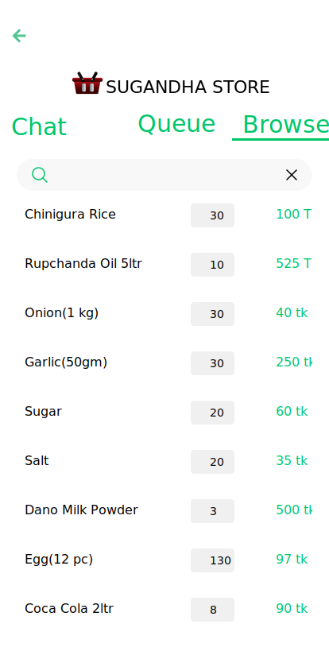

0. Cover Page
Software Requirements Specification
for
Project name
Version 1.0.1
| Name | ID |
| Ferdous Zeaul Islam | 1731136042 |
| Mohammed Safat Hosssain | 1731263042 |
| Rifat Islam | 1731536042 |
Group: Procrastinators
Group Number: 10
Date: August 5, 2020
1. Introduction
1.1 Purpose
“Find a store” system is a platform between small local businesses and at home customers to connect and interact with each other. In a way the system is an attempt to virtualize the typical interactions between the two party. The inspiration for this project is to reduce the necessity of going outside for day-to-day household products during the pandemic.
1.2 Document Convention
The document is written following the IEEE template for SRS (Software
Requirement Specification). The headers, sub-headers, paragraphs are written as follows:
i. Headers: Calibri Head, font size-16, Bold
ii. Sub-headers: Calibri Head, font size-14
iii. Paragraphs: Calibri Body, font size-12
Bold text is used to put emphasis, phrases/words that are defined in the glossary
are given in italic with their serial numbers as superscript and a table is used in Section-4
to list the actions and system responses under extended use cases of each feature and on
Section 2.3 to show user classes and their pertinent characteristics.
The primary intended audience of this SRS document are the project team members and our course instructor. It should also be understandable to knowledgable technical person such as software developers and software industry business specialists.
1.4 Product Scope
The main product of our system are the two separate Android app for customers 2 & shop-owners 3 . Interaction between the two parties will be done using the two apps. The system also consists of a website that enables customers 2 to view and post reviews and shop-owners 3 to view their transactions analytics. The goals and objectives of the system are stated below,
Goals (what we hope to achieve):
- Substitute/reduce the need for going outside to get day-to-day household items from local stores; particularly- stationary stores, bakeries, convenience stores.
- Virtualize the existing interaction between the two party.
- Ensure desirable user experience and user expected reliability.
Objectives (how we hope to achieve the goals):
- Mimic the well-known traditional behaviors between customers 2 and shop-owners 3 through the android app and website wherever possible.
- Include features that are easy to use and understand such as- connect customers & shop-owners through voice call, form a queue when multiple customers at a shop, take available items input by scanning barcodes etc. (Broadly discussed in section-4)
- Design UI components following the designs of existing popular app and websites.
1.5 References
[1]"Device compatibility overview | Android Developers", Android Developers, 2020. [Online]. Available: https:// developer.android.com/guide/practices/compatibility#defined. [Accessed: 05- Aug- 2020].
[2]K. Panetta, "Gartner Top 10 Strategic Technology Trends for 2020", Smarter With Gartner, 2020. [Online]. Available: https:// www.gartner.com/smarterwithgartner/gartner-top-10-strategic-technology-trends-for-2020/. [Accessed: 05- Aug- 2020].
2. Overall Description
2.1 Product Perspective
The idea of this system is inspired from the current area-wise lockdown enforced all over Bangladesh as a counter measure to the pandemic. By using our android app customers from home can connect with local shops to get day-to-day necessary items, while small businesses struggling dearly due to lock-down can continue business. A simple diagram of the overview of the whole system is given below,
2.2 Product Functions
The major features of the system are as follows,
- Register shop-owner accounts & customer accounts.
- Customers can find shops nearby from map or search for shops by items.
- Shop-owners entry items by scanning product barcode or image to text conversion from product sticker.
- Customers enter shops wait in queue(if any), browse items & chat with other customers while waiting.
- Orders are placed and finalized over voice call (app-to-app) between customers & shop-owners.
- System suggestion of efficient delivery sequence.
- Shop-owners and customers view reviews given by customers.
2.3 User Classes and Characteristics
Two type of users will interact with our system’s app and website- customer, shop-owner. On the basis of their characteristics further divisions can be made,
Based on technical expertise:
| User class | Characteristic | Example |
|---|---|---|
| Technophobes (majority) | Unwilling to use technology such as mobile phones, computers. | Housewife (customer), domestic workers (customer), old person etc. |
| Technology Shy | Moderate technical expertise. Responsive to clear-cut, visible benefits. | People who use phones and computers where absolutely necessary. |
| Tech-savvy | Comfortable with latest technologies. Well-aware of new trends. | Mostly young generation of people. |
Based on Shop type:
Initially app consists of three shop types- convenience stores, stationary stores and bakeries. Accordingly the shop-owner account types can be though of these three types as well.2.4 Operating Environments
Android App:
- Device Hardware –
- “Android compatible” device.[1]
- Operating System – Android 5.1 (Lolipop) or above.
- Software Component – Google Play Services, Sinch Android SDK.
Website: Any browser that runs html, css and javascript.
2.5 Design and Implementation Constraints
- Shop-owner account’s legitimacy is a concern, since anyone can register. Although we have phone number verification at sign-up implemented.
- Reliability of delivery and receiving is completely up to the users. The app is merely a medium for confirmation.
- The basic (free) version API/SDKs, database, hosting service that are used allow a threshold amount of usage. It is important to note that their functionalities are essential for the system.
- Since the Android OS is open-source, it’s implementation differs from manufacturer to manufacturer. Certain features of our app may not function smoothly due to restrictions put in the OS implementation.
- The App requires user permission for working with components like- fetching location, microphone-speaker access, camera access etc.
- The core features require continuous active internet connection.
- Majority of the target users for the system are technophobe, technology-shy people. Acceptability of the designed UI/UX is uncertain.
2.6 User Documentation
A demo video of the app and website usage will be available to the users. No documented manual is to be provided.
2.7 Assumptions and Dependencies
Assumptions:
- Users will adhere to their consents made using the app. Such as- shop- owners will deliver and customers will pay on delivery according to their mutual consent, customers and shop-owner provide their actual home/store address etc.
- Customers & shop-owners phones have working microphone, speaker and/or headphone/earphone connectibility.
- Shop-owners and staff account (if allowed) holders to have a working camera on phone that is compatible for working with scanning and text detection tools used.
Dependencies:
- Users need to have google play services installed on their android phones (which is pretty common). Particularly- Barcode Scanning & TextRecognition from ML kit, Maps SDK, Fused Location API.
3. External Interface
3.1 User Interfaces
The UI of the app is designed in such a way that any user can interact with the application comfortably. When the user launches the app for the first time, the landing page welcomes the user with "Sign Up (Get Started)" or "Sign In" option.
The "Sign In" option will land the user to the "Login" page where existing users can use their credentials (e.g., email and password) to log in

For the new user, the "Sign Up" option will take them to a page where they have to enter their phone number for verification. The OTP code will be needed to insert on the next page to continue the verification process

After the successful mobile number verification, the user must have to set their profile by providing necessary information in the "Setup Profile" page.

After completing the authentication process, the user will land on the map-view page locating all the nearby stores, which is also considered as the homepage of the application. Every store on the map has a status indicator (dot) where red, yellow, and green represent not available, busy, and available status.
To access a store, the user has to tap on the store icon or the name. This will take the user to the specific store page where the user can see the existing queue and a button/option to enter the shop.
After entering the shop, the user can see his/her name on the queue and access the "Chat" window from the tab above the page. In the chat window, the user can chat with the existing customers in the queue


On the browse tab, the user can see the existing products and their prices that are available in the store.
There is an option besides the search box on the navigation bar in the map-view page which allows users to access the menu. The “Menu” page contains several functionality which enables the user to edit profile, view pending orders, check order history and change application settings.
On the shop-owner version, the user(owner) will be landed on their shop's specific customer queue page after the authentication process. In the queue tab, the user can see the list of all the customers waiting for the service

The "Next Customer" option at the bottom of the homepage takes the user (owner) to the "Purchase List" page. On that page, the user can add the items that the client agrees to buy. There are options for confirming the current order and controlling the ongoing phone call in the bottom section.
On the browse tab (from homepage), there is a list of items that are currently available at the store.The shop-owner can add new items, modify the prices, and remove out of stock items from the list.

3.2 Hardware Interfaces
The device that will run the application, requires WIFI and GPS for using the map and detecting the accurate user location. The device also needs the camera for barcode, product scanning and speaker, microphone for voice call.
3.3 Software Interfaces
The minimum android operating system version required to run the application is "Lolipop5.1 (API level 22)". The application will work properly on any device with the latest (from android 5.1 to 10) android operating system.
3.4 Communications Interfaces
Real-time voice protocol (RTP) is used in this application for VoIP service, which allows the users to make calls using internet connections. For chatting or messaging, Firebase Cloud Message (FCM) is used, which ensures data protection (GDPR) and encryption.
4. System Features
This section includes the requirements that describe all the essential functions of the system.
4.1 Use Case Diagram

4.2.1 Create an account
Use case name: Create an account
Use case type: Primary.
Actors: Customer, Shop-owner.
Brief Description: Sign up by providing necessary information with the app.
| Actor Action | System Response |
|---|---|
| 1. Open the app. | 2. Check if this is the first time. If so, show get started page. (customer UI link, shop-owner UI link ) |
| 3. Select get started and enter phone number. | 4. Show phone number entry page. (customer UI link, shop-owner UI link ). |
| 5. Enter phone number and press verify. | 6. Record phone number and send sms with verification code show enter verification code page with a timer. (customer UI link, shop-owner UI link ). |
| 7. Enter verification code. | 8. Check entered code then show profile setup page. |
| 9. Enter necessary information. | 10. Store given information. |
| 11. Press the home/store address text box. | 12. Show map with a dragable map icon and search bar at top. |
| 13. Search for a place using the search bar and press enter. | 14. Navigate map view to selected location. |
| 15. Move dragable map icon and select desired location. | 16. Go back to sign up page fill the address text box with address of that location. |
| 17. Click the sign up button. | 18. Show loading dialog, store all info to database and then show home screen. |
Alternate Course of Action
6.1 User inputs invalid phone number, show toast “invalid number” and a red exclamation mark on the input text box.
8.1 Verification code entry duration times out. Go back to phone number entry page.
8.2 Wrong verification code entered. Show toast “invalid code” and turn the text box red.
8.3 User attempts to enter wrong verification and/or timer times out a threshold number of times (this is set by the authentication api used). Show error dialog “too many attempts! try again at least 24 hours later” and close the app.
8.4 User doesn’t receive any code in set duration, user requests a resend code. The process is repeated.
14.1 Can’t find the searched location, show “can’t find this location. try selecting from the suggestions” toast.
17.1 Empty input fields and/or invalid entries. Mark the corresponding input fields in red and show “invalid input” on each field.
4.2.2 Login & Logout
Use case name: Login, logout
Use case type: Primary.
Actors: Customer, Shop-owner.
Brief Description: Login to the app with registered username/phone number and password.
| Actor Action | System Response |
|---|---|
| 1. Open the app. | 2. Check if this is the first time. If not, show login page. (customer UI link, shop-owner UI link ). |
| 3. Enter username/phone number and password. | 4. Check the username/phone number and password. Show home page. (customer UI link, shop-owner UI link ). |
| 5. Pick the show menu option. | 6. Show the menu page. (customer UI link, shop-owner UI link). |
| 7. Pick Settings→Logout. | 8. Logout user. Show login page. |
Alternate Course of Action
4.1 Username/phone number and passwords don’t match any user registered. Show toast “wrong username and/or password. check please.” make the input fields border red.
4.2 No internet connection. Show toast “You are not connected to the internet!”.
4.2.3 Set Store’s Service Status
Use case name: Set store’s service status.
Use case type: Secondary (default status is automatically set to “Open”).
Actors: Shop-owner.
Brief Description: After login/sign-up, shop-owners can set current service status of the store- open, busy or closed. The status is reflected on the customer app’s map with colored dots: open = green, busy = yellow, closed = red.
| Actor Action | System Response |
|---|---|
| 1. Login/Sign-up just completed or User is already logged in and opens the app. | 2. Default service status is set to “Open”. Present the home screen with two tabs and a menu option on top left. (shop-owner UI link). |
| 3. Pick the show menu option→ settings. | 4. Show menu page then settings page. (shop-owner UI link ). |
| 5. Edit the status field. | 6. Show a drop down with statuses- active, busy, closed. |
Alternate Course of Action
(Alternate course of action for Sign-up and Login are the same as mentioned in 4.1, 4.2 these are not repeated here. But to get to this point login or sign up must be completed first.)
None.
4.2.4 Entry products info for the visible Product-List.
Use case name: Entry products for the visible product list.
Use case type: Primary.
Actors: Shop-owner.
Brief Description: Upon successful login/signup the shop-owners can input products that will be visible to customers when they enter. Note that, the product-list won’t necessarily contain all the items sold in the shop, it’ll contain especially items that are rare to find however, this is up to the shop-owner.
| Actor Action | System Response |
|---|---|
| 1. Login/Sign-up just completed or User is already logged in and opens the app. | 2. Show the home page for shop-owner app, which is a page with two tabs- Customer queue, Product list. (shop-owner UI link ). |
| 3. Press “Product-list” tab. | 4. Show the product-list page containing currently listed products or is empty. (shop-owner UI link ). |
| 5. Press the “+” button. | 6. Open up camera asking to point to product barcode. |
| 7. Take picture with barcode inside target area. | 8. Show “processing…” dialog. Scan barcode and find product name ask shop-owner for quantity and price/unit. |
| 9. Input quantity and price/unit. | 10. Add new product item entry to product-list. |
Alternate Course of Action
(Alternate course of action for Sign-up and Login are the same as mentioned in 4.1, 4.2 these are not repeated here. But to get to this point login or sign up must be completed first.)
6.1 Camera access permission is not granted. Ask for user permission, but first present a dialog box with explanation why the camera access permission is required. If user still doesn’t grant permission, present a text input field for entering by typing manually.
8.1 Picture taken doesn’t contain the barcode was not inside the target area. Show toast “failed to scan barcode. make sure the barcode is inside the square marked area.”
8.2 The product info for the barcode scanned was not found by the API used. Ask user to take image of the front cover of the product and get the product name from there and show to user, this deduced name entry will be editable by the user.
4.2.5 Browse Nearby Stores from Map.
Use case name: Browse nearby stores from map.
Use case type: Primary.
Actors: Customer.
Brief Description: After login/signup the home page of the app is shown to the customer account. This map contains all the stores that are nearby. Nearby meaning the customers current position is inside the store’s given perimeter.
| Actor Action | System Response |
|---|---|
| 1. Login/Sign-up just completed or User is already logged in and opens the app. | 2. Show a page with a map with specials icons for each kind of shops. Each icon has colored dots in the bottom left to indicate its state- green for open, yellow for busy and red for closed.(customer UI link). |
| 3. Press an icon. | 4. Show the shop page consisting of three tabs- Chat, Customer Queue, Browse items. (customer UI link ). |
| 5. Pick the “Enter shop” button. | 6. The customers name is now listed at the last of customer queue. The customer can now chat with others in queue while waiting. (customer UI link ). |
Alternate Course of Action
(Alternate course of action for Sign-up and Login are the same as mentioned in 4.1, 4.2 these are not repeated here. But to get to this point login or sign up must be completed first.)
6.1 The customer queue is empty. Pressing “Enter Shop” directly connects the customer with the shop-owner (upon shop-owners approval).
4.2.6 View the Customer-Queue
Use case name: View the customer queue.
Use case type: Primary.
Actors: Customer,Shop-owner.
Brief Description: Shop-owner and customers both have a view of the customer queue- the list of customers waiting to connect to the shop-owner. Shop-owners have this view as their homepage, customer can see this after entering shops (Use case 4.5).
| Actor Action | System Response |
|---|---|
| 1. Customer taps on a store icon from the map from the customer app. | 2. The customer queue- list of customers who are waiting to connect with shop-owner is shown. The page has three tabs- Chat, Customer Queue, Browse items; customer queue is shown first. (customer UI link ) |
| 3. Shop-owner opens the shop-owner app. (with Login/sign-up done) | 4. Shop-owner is presented the customer queue. The page has two tabs- Customer Queue, Enter Items. |
Alternate Course of Action
(Alternate course of action for Sign-up and Login are the same as mentioned in 4.1, 4.2 these are not repeated here. But to get to this point login or sign up must be completed first.)
None.
4.2.7 View/Browse available items in the store’s Product-List
Use case name: View/browse available items in the store’s product-list.
Use case type: Secondary. (This action is optional)
Actors: Customer.
Brief Description: After login/sign-up and then picking a shop-icon customers can view the items listed in the shop’s product-list.
| Actor Action | System Response |
|---|---|
| 1. Login/Sign-up just completed or User is already logged in and opens the app. | 2. Show a page with a map with specials icons for each kind of shops. (customer UI link ). |
| 3. Press an icon. | 4. Show the shop page consisting of three tabs- Chat, Customer Queue, Browse items. (customer UI link ). |
| 5. Pick “Browse” tab | 6. Present all the items listed in the shop. |
Alternate Course of Action
(Alternate course of action for Sign-up and Login are the same as mentioned in 4.1, 4.2 these are not repeated here. But to get to this point login or sign up must be completed first.)
6.1 The product-list is empty. Show “Nothing to show” written on the browse page.
4.2.8 Chat with others on the Customer Queue
Use case name: Chat with others on the customer queue.
Use case type: Secondary. (This action is optional)
Actors: Customer.
Brief Description: After login/sign-up, picking a shop-icon and then pressing “enter shop” customers can chat with others on the queue while waiting.
| Actor Action | System Response |
|---|---|
| 1. Login/Sign-up just completed or User is already logged in and opens the app. | 2. Show a page with a map with specials icons for each kind of shops. (customer UI link ). |
| 3. Press an icon. | 4. Show the shop page consisting of three tabs- Chat, Customer Queue, Browse items. (customer UI link ). |
| 5. Pick “Enter shop” button. | 6. The customers name is now listed at the last of customer queue and can now chat with others in queue while waiting. (customer UI link ). |
| 7. Pick “Chat” tab. | 8. Present a global chat page where all messages shared publicly are visible. |
| 9. Write a message and click send. | 10. Show the message at top of the chat page. |
Alternate Course of Action
(Alternate course of action for Sign-up and Login are the same as mentioned in 4.1, 4.2 these are not repeated here. But to get to this point login or sign up must be completed first.)
6.1 The customer queue is empty. Pressing “Enter Shop” directly connects the customer with the shop-owner (upon shop-owners approval).
4.2.9 Connect Customers and Shop-owners via App-to-App Voice Call
Use case name: Connect customers and shop-owners via app-to-app voice call.
Use case type: Primary.
Actors: Customer, Shop-owner.
Brief Description: Shop-owners and customers are connected to each other via app-to-app voice call. Through their conversation the purchase list will be setup and confirmed.
| Actor Action | System Response |
|---|---|
| 1. Customer picks the “Enter shop” button from customer app. | 2. The customers name is now listed at the last of customer queue. (customer UI link ). |
| 3. Shop-owner selects “Next customer” from shop-owner app. | 4. A call is initiated between the customer at top of the customer queue and shop-owner. |
| 5. The users talk from both end. | 6. Each user’s voice transfers from one end to other simultaneously. The call screen is shown with- purchase list, call options, duration of call ( common UI link). |
Alternate Course of Action
(Alternate course of action for Sign-up and Login are the same as mentioned in 4.1, 4.2 these are not repeated here. But to get to this point login or sign up must be completed first.)
6.1 Call is disconnected due to internet disruption, the API handles this by waiting for a certain amount of time and then trying to reconnect. The call is disconnected and the users are notified with a dialog “Unfortunately the call was disrupted, please check your internet connection”.
4.2.10 Enter/Edit Purchase List (item,quantity, price) while in call
Use case name: Enter/edit purchase list (item,quantity, price) while in call
Use case type: Primary.
Actors: Customer, Shop-owner.
Brief Description: After the call between customer & shop-owner has been initiated, during their conversation an editable list will be presented to both. They can collaboratively make up this list together.
| Actor Action | System Response |
|---|---|
| 1. Customer picks the “Enter shop” button from customer app. | 2. The customers name is now listed at the last of customer queue. (customer UI link ). |
| 3. Shop-owner selects “Next customer” from shop-owner app. | 4. A call is initiated from both customer and shop-owner ends. |
| 5. Customers/shop-owner click the “+” button. | 6. A new entry item is added to list. ( common UI link). |
| 7. Both users edit the input filed. | 8. The edit changes are shown to both party in real-time. |
| 9. Confirm checkbox is clicked from both ends and one user picks “proceed”. | 10. Show dialog “confirm your purchase list?” with options “yes”, “no, review”. |
| 11. User picks “yes”. | 12. The purchase list is finalized and the order is recorded on both end. |
Alternate Course of Action
(Alternate course of action for Sign-up, Login and Browse Nearby Stores from Map are the same as mentioned in 4.1, 4.2 and 4.5 respectively, these are not repeated here. But to get to these steps must be completed first.)
8.1 Both users attempt to edit same field together. The customer is given precedence inputting the product name, quantity input field and the price input field is only filled by the shop-owner.
10.1 One of the user picks “hang up” with the “Confirm” checkbox unchecked, show that user a dialog saying “Are you sure you want to hang up before confirming the purchase list?” and options “yes, hang up”, “no”. Picking “yes, hang up” then disconnects the call and notifies the other user that the call has been disconnected.
10.2 One of the user picks “proceed” with the other user’s “Confirm” checkbox unchecked, show the user who picked “hang up” a dialog saying “The purchase list hasn’t been confirmed from the other end, please wait”.
4.2.11 Search for Store by Item
Use case name: Search for stores by item.
Use case type: Primary.
Actors: Customer.
Brief Description: Using the search bar on top of the customer app’s home page customers can search for stores by giving input an (one) item name. The input can be given through voice.
| Actor Action | System Response |
|---|---|
| 1. Login/Sign-up just completed or User is already logged in and opens the app. | 2. Show a page with a map with specials icons for each kind of shops. (customer UI link ). |
| 3. Give input in the search bar by speaking or typing. | 4. Show loading dialog as the system searches each nearby stores database for the item. Mark the borders of found stores. |
Alternate Course of Action
(Alternate course of action for Sign-up and Login are the same as mentioned in 4.1, 4.2 these are not repeated here. But to get to this point login or sign up must be completed first.)
4.1 Searched item not found on any nearby store database. Show “item not found in any stores nearby” dialog.
4.2.12 View and Confirm Pending Deliveries
Use case name: View and Confirm pending deliveries.
Use case type: Primary.
Actors: Customer.
Brief Description: Customers confirm deliveries upon receiving items, shop-owners are alerted when confirmation is made.
| Actor Action | System Response |
|---|---|
| 1. Shop-owner/customer picks the “show menu” option from their app. (assuming they are already signed up and logged in) | 2. The menu page is presented. (customer UI link ). |
| 3. Shop-owner/customer picks “pending deliveries”. | 4. A list of pending deliveries that are unconfirmed is presented. Each list item contain the corresponding store name, purchase-list and a “confirm” button. |
| 5. Customer presses the confirm button. | 6. A dialog box appears “Are you sure you want to confirm this order?” with button “yes”, “no”. |
| 7. Customer presses “yes”. | 8. The purchase is confirmed and removed from both customer and shop-owners pending deliveries list. |
Alternate Course of Action
(Alternate course of action for Sign-up and Login are the same as mentioned in 4.1, 4.2 these are not repeated here. But to get to this point login or sign up must be completed first.)
6.1 Customer picks “no”, the order remains pending.
4.2.13 View and Cancel a Pending Delivery
Use case name: Cancel a pending delivery.
Use case type: Secondary. (this is optional)
Actors: Shop-owner.
Brief Description: Shop-owners can cancel deliveries.
| Actor Action | System Response |
|---|---|
| 1. Shop-owner/customer picks “show menu” option from their app. (assuming they are already signed up and logged in) | 2. The menu page is presented. ( shop-owner UI link ). |
| 3. Shop-owner picks “pending deliveries”. | 4. A list of pending deliveries that are unconfirmed is presented. Each list item contains customer name, address, purchase list and a button “cancel order”. |
| 5. Shop-owner presses “cancel order”. (before the order is confirmed) | 6. A dialog saying “Are you sure you want to cancel this order?” and buttons “yes, I am sure”, “no” is shown. |
| 7. Shop-owner presses “yes, I am sure”. | 8. The order is canceled. Customer is notified. |
Alternate Course of Action
(Alternate course of action for Sign-up and Login are the same as mentioned in 4.1, 4.2 these are not repeated here. But to get to this point login or sign up must be completed first.)
6.1 Shop-owner picks “no”, the order remains pending.
4.2.14 Notify Customers of Canceled Deliveries
Use case name: Notify customers of canceled deliveries.
Use case type: Secondary. (this is optional)
Actors: System.
Brief Description: Customers are notified if/when their orders are canceled by shop-owners.
Typical Course of Action
System Action- Present customer with a notification saying “An order you placed was canceled, Tap to view more.”
Customer taps the notification and is shown details- store name & purchase-list of the order that was canceled.
4.2.15 Notify Customer/Shop-owner of Pending Deliveries
Use case name: Notify shop-owner/customer of pending deliveries.
Use case type: Secondary. (this is optional)
Actors: System.
Brief Description: System checks and notifies customers every one hour interval if they have an order pending.
Typical Course of Action
System Action- Check if any deliveries are pending on an hourly basis. Show a notification saying “You have deliveries pending! Tap to see more”
Shop-owner/customer taps the notification and is shown the pending orders page (the pending order viewing procedure is explained in 4.12, 4.13).
4.2.16 Keep track of every deal.
Use case name: Keep track of every deal.
Use case type: Secondary.
Actors: System.
Brief Description: System stores data regarding each deal in database. Data stored- delivery time, conversation duration, delivery status(completed/canceled), the purchase-list.
Typical Course of Action
System Action- Runs in the background and stores relevant data to database.
4.2.17 Prompt shop-owners to Update store’s Product-List.
Use case name: Prompt shop-owners to update product-list.
Use case type: Secondary.
Actors: System.
Brief Description: System regularly shows shop-owner a notification requesting to add to or edit the product list.
Typical Course of Action
System Action- Once every 3 days show notification to shop-owner “Want to update you product-list? Tap here!”.
Shop-owner/customer taps the notification and is shown the shop’s product-list page from where he can add/edit items. (the entry/edit procedure is explained in 4.4).
4.2.18 Suggest efficient Delivery Sequence.
Use case name: Suggest efficient delivery sequence.
Use case type: Secondary.
Actors: System.
Brief Description: System comes up with an efficient delivery sequence and the pending deliveries in the shop-owner app are ordered accordingly.
Typical Course of Action
System Action- Compute and analyze the distance from shop to customer location to come up with a sequence that enables lowest travel distance to complete all deliveries. Using a graph algorithm.
4.2.19 Post/View Review about a Shop
Use case name: Post/view review about a shop.
Use case type: Secondary. (this is optional)
Actors: Customer.
Brief Description: Customers can go to the website and post or view reviews about shops they have interacted with or are nearby to their home.
| Actor Action | System Response |
|---|---|
| 1. Goes to website link. | 2. Show a login page asking for username/phone number & password.(page UI link) |
| 3. Enters username/phone number and password and presses Login button. | 4. Check the username/phone number and password. Show home page with a list of shop name that are nearby to customer’s home and/or the ones he/she has interacted with. (page UI link) |
| 5. Clicks on a store from the list. | 6. Show review page of the store with reviews from other users listed. Each review contains one of three tags- “good”, “moderate”, “bad” and a text attached. There’s a “post a review” option at the top of the page with textbox(review text), radio button (good, moderate, bad) and “post review” button. (page UI link) |
| 4. Click “Post Review” after filling the input fields. | 4. The review is posted and is visible to all. |
Typical Course of Action
4.1 User credentials are wrong, show error message above the form saying “Username and/or password is incorrect!” and turn the text boxes red.
8.1 “Post Review” pressed without filling all the input fields, show error above the “post a review” section saying “Your review must contain some description and a service quality selected” and turn the missing input field/s red.
4.2.20 View Shop Reviews
Use case name: View shop reviews.
Use case type: Secondary. (this is optional)
Actors: Shop-owner.
Brief Description: Shop-owners can go to the website and view reviews on their shop posted by customers.
| Actor Action | System Response |
|---|---|
| 1. Goes to website link. | 2. Show website landing page which is the login page. (page UI link) |
| 3. Enter credentials and presses login. | 4. Check the strore-name/phone number and password. Show home page with all the reviews listed on their shop. Each review contains one of these tags- “good”, “moderate”, “bad” and a text attached.(page UI link) |
Alternate Course of Action
4.1 User credentials are wrong, show error message above the form saying “Store name and/or password is incorrect!” and turn the text boxes red.
5. Other Nonfunctional Requirements
5.1 Performance Requirements
There are no specific performance requirements for this application. But, the real-time systems for messaging, VoIP service, and client-shop owner cart systems should be designed in such a way that there is no significant time delay in the application. The responsive UI has to perform precisely to ensure a smooth user experience.
5.2 Safety Requirements
There are no specific performance requirements for this application. But, the real-time systems for messaging, VoIP service, and client-shop owner cart systems should be designed in such a way that there is no significant time delay in the application. The responsive UI has to perform precisely to ensure a smooth user experience.
5.3 Security Requirements
The users must have to verify their identity and provide authentic information for creating an application account. Each user must have their own user account to use the application. All kinds of user data will be kept safe, and the system will not enclose any user information without user concern. That will ensure data privacy. Moreover, the authentic users only system will provide security among the users of the application
5.4 Software Quality Attributes
The requirements in this section specify the required reliability, availability, and maintainability of the software system.
5.5 Business Rules
The users will be provided with the freemium version of the application by default. The free version may contain ads. The users can upgrade their accounts, which will grant the premium version of the application with some extra services and free of ads. The migration to the premium version will be a onetime purchase for all the users.
6. Other Requirements
One extra requirement of this project is to be inline with the latest technology trends and make sure it is a software worthy of the next era. We have taken global research and advisory firm - Gartner’s predictions as guideline to achieve this.
The Project in light of Gartner Top Technology Trends
According to Gartner the leading technologies in the software industries for this era are- AI, AR, block-chain, intelligent search features. Their most recent prediction consists of 10 technology trends for the year 2020 [2], which include- hyper-automation, multi- experience, human augmentation, distributed cloud, AI security etc. The “find a store” system somewhat adheres to a few of these predictions in its features. Such as-
- Multi-experience: Replacing necessity of technology-literate people with people-literate technology. “Find a store” isn’t the traditional online shop app/website. The platform lets customers and shop-owners connect and interact with each other, with special focus to small local businesses. The system attempts to virtualize these interactions that make local small businesses stand out.
- AI: The system uses google play services ML kit provided SDKs- barcode scanning and text recognition to ease the product list input process for the shops.
- Distributed Cloud: The main database for the system is the Google’s Cloud Firestore which is a serverless distributed cloud service. Distributed cloud platforms make product scale up process much easier and cost saving.
Appendix A: Glossary
| Term | Definition |
|---|---|
| System | The whole platform consisting of app and website. |
| Customer | User using the customer-app with aim to find stores for buying day-to-day necessary items. |
| Shop-owner | Small local small convenience store/stationary/bakery owner. |
| Customer-Queue | A list of customers who have pressed “enter the store” button and are waiting to connect with shop-owner. |
| Visible Product-List | The list of products that the shop-owners have inputted through the app. These are visible to customers through the “Browse” tab. |
| Purchase-List | The list of items that customers and shop-owners have agreed upon for transaction. Each item in this list has three fields- name, quantity and price. |